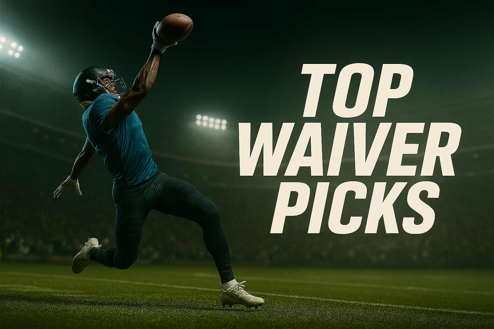
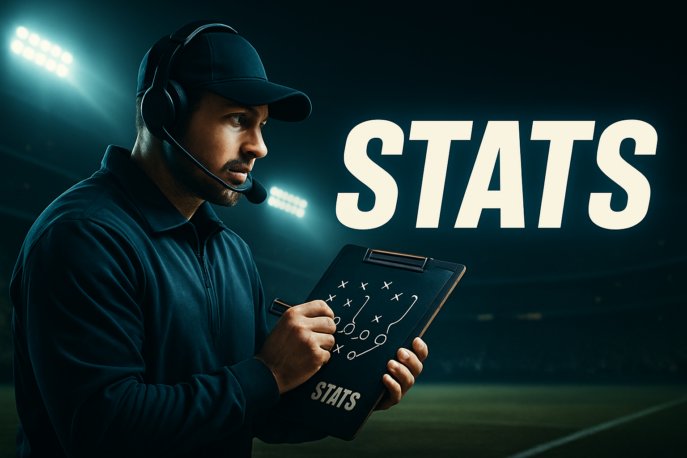
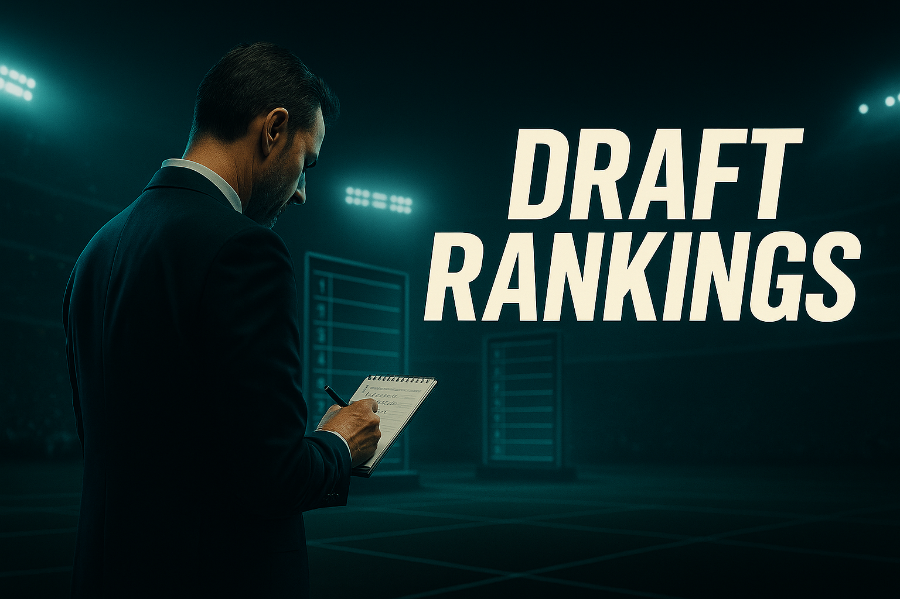

Der Fantasy Football Guide aus der deutschsprachigen Community – mit wöchentlichen Rankings, Waiver-Tipps und interaktiven Tools, die dir helfen, deine Liga zu dominieren.

Weekly Rankings
Topaktuelle Spieler-Rankings pro Woche für jede Position – direkt aus unserer Fantasy-Analyse.
Rankings ansehen

Top Waiver Picks
Wöchentliche Empfehlungen für Free Agents mit Breakout-Potenzial.
Zu den Waivers

Fantasy Statistiken
Eigene Charts & Tools für echte Fantasy-Nerds – mit tiefen Team- und Spieleranalysen sowie Trend-Insights.
Statistiken ansehen

Draft Rankings
Unsere Top-Spieler für deinen Draft – mit interaktivem Cheat-Sheet für dein Live-Board.
Zu den Draft Rankings